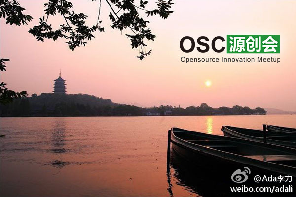
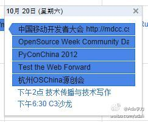

老师推荐的不一定是企业想要的。之前招实习生，老师推荐过来的能力差强人意，不过倒是听话。//@顾进广://@Tommouse2012: 转发微博。@刀客六:今天来上课的只有10个学生，很多学生给我发短信请假说去跑宣讲会或笔试去了。故这里呼吁一下，请企业在年后开始应届毕业生招聘，否则大四教学受到很大干扰，对于研究生也有同样问题。对于想早的企业，请联系专业老师，采用内推形式进行人才选择。@云泉微博 @HoodleMobile @徐小平
之前听一些社区组织者在谈到以后发展时，都会提到培训，而且把培训当成是个赢利的方式。昨天听公司销售总监说，其实很多公司做培训，也是市场行为来做的，收费培训也是为了拓展客户，培训本身不赚钱，甚至是亏钱，最终衡量培训效果的是看通过培训拿到的项目或者单子。
昨天听@裕波 讲述，他最早是通过QQ群学习提问，后来参加一些线下活动，发现门槛高，喝杯咖啡要五十元，而且资深成员和小白的待遇不一样，他不喜欢。于是他萌发了自己组织活动，帮助更多和他一样的技术人员。后来就专门从事这方面的工作了。似乎很多社区组织者都是从自助助人开始的。
哈根达斯和湾仔码头有什么相同之处？ 它们都是同一家公司的市场手笔，把普通商品卖出奢侈品的价格和感觉。@小事儿爹:喜欢吃哈根达斯的姐妹们，3.99刀一大桶哦，25元人民币而已，在北京一个球都买不到啊有木有！
熟人推荐的好处：一是已经做了调查和过滤；二是等于用自己的信誉做担保。如果推荐出的是很不靠谱的人，最受损的是自己的信誉。//@沈卓立TouchChina:显然的，经过几年的实践证明，朋友圈和熟人推荐是最靠谱的核心员工来源。比社会招聘靠谱很多。@Ada李力:今天中午@沈卓立TouchChina 请 @裕波 和我吃烤鱼，原因是经过裕波和我的牵线搭桥，Joey在几天内找到一位称心的前端工程师，说看起来社会化招聘大有可为。[呵呵]
帮转。10月20日的技术活动扎堆了。【杭州】开源中国 OSC 源创会第十三期召集帖: 往期聚会详情请看这里 杭州是一个很美妙，很浪漫的城市。我在杭州有过 N 多美好的回忆啊！这应该是我第一次因为公事去杭州，很是期待~ 这次杭州的活动将一如既往的执行O... 网页链接 
大家安排活动怎么喜欢放在同一天呢？一年有365天啊！2012年10月20日，同一天北京的技术活动有六个：1. 中国移动开发者大会 @CSDN 2. 开源周社区日 @程勇-PeterCheng 3. PyConChina 2012 @ZoomQuiet 4. Test the Web Forward @fiona_duan 5. 技术传播与技术写作 @高志军_PKU 6. C3沙龙 @Deepb1ue 
俺做主持，好让人期待啊。闫辉同志说他是导演。//@LukeFan:技术和产品的碰撞，真正的解决创业者的根本困难，这才是社区服务的典范。//@CindyJJ: 俺也要去参加非”程“勿扰啦一下子能认识小100个技术高手的活动好让人期待啊！谢谢@LukeFan @CSDN闫辉 ！@闫辉_Life加加:这些天一直在忙下周在移动开发者大会上，创业俱乐部的两场活动。尤其是“非程勿扰”，现在确认的几家创业公司都很高兴有这样机会，可以面对上百个对创业感兴趣的技术高手的平台。 有兴趣的创业团队要抓紧私信我。
帮转。北京的301医院的耳鼻喉科是国内实力很强的科室。@田爱娜:刚接了大弟的电话，爸爸妈妈这两天去吉首准备给爸爸拖了两年的喉咙息肉做手术，结果通过昨天与今天的术前检查被查出是癌症~崩溃了，现在的方案是吉首医院从长沙调专家过去，要嘛就是转院。求助：哪里的医院是可以贫苦人家治疗癌症的？@薜蛮子
//@头条博客:可不可以不要那么有爱啊@地球太危险啦:“麻麻为什么金牌和铜牌待遇差这么多？”“孩子，你知道世界第一高峰么？”“恩，珠穆朗玛峰嘛。”“那世界第三高峰呢？”“干城章嘉峰啊，麻麻我们不要讨论这个问题了，继续讨论金牌和铜牌的事情啊。”“...我没什么可说的，让你整天看那些没用的地理书...”